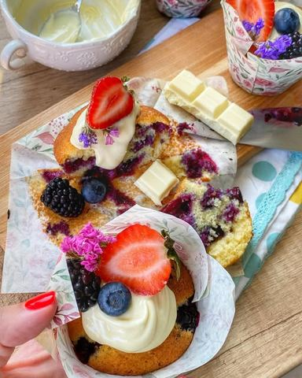

Kolači i keks
Najsočniji mafini sa borovnicama
16. 8. 2020.galerija11 sastojaka

Moja beleška
Sačuvano
Ocena
Sastojci
- Recept
Priprema
Žicom za mućenje umutiti jaja i šećere, dok ne promene boju i posvetle, pa dodati istopljen puter, i malo najsitnije rendane kore limuna. Sipati mleko i promešati. Potom u to dodati brašno sa praškom za pecivo, sodom i soli i promešati žicom u lepo glatko testo. Na kraju dodati polovinu borovnica pa lagano sjediniti. Sipati u kalupe za mafine do nekih 2/3 mere i ostatak borovnica poredjati preko. Peci na 180C 25 minuta. Ja sam na pečene i malo prohladjene dodala po malo topljene bele čokolade za još lepši doživljaj dezerta, a vi možete po ukusu. Sledeći put pravimo cupcakes sa seckanom čokoladom i radimo fil za kremkanje 💗
Originalni opis sa Instagrama
Najsočniji mafini sa borovnicama 🌸 Iako sam tip osobe koji se uvek pre zakači za sve sto je čokoladno, veliki sam ljubitelj voća i bas volim ovako jednostavne, mekane i sočne mafine uz kaficu u toku dana, a lepa ideja i za doručak dok su još ovako topli 🥰 Recept: •2 jaja •180gr šećera •1 vanilin šećer •malo rendane kore limuna •125 gr putera •250 gr brašna •prasak za pecivo •prhosvat sode bikarbone •prhosvat soli •220 ml mleka •200 gr borovnica Žicom za mućenje umutiti jaja i šećere, dok ne promene boju i posvetle, pa dodati istopljen puter, i malo najsitnije rendane kore limuna. Sipati mleko i promešati. Potom u to dodati brašno sa praškom za pecivo, sodom i soli i promešati žicom u lepo glatko testo. Na kraju dodati polovinu borovnica pa lagano sjediniti. Sipati u kalupe za mafine do nekih 2/3 mere i ostatak borovnica poredjati preko. Peci na 180C 25 minuta. Ja sam na pečene i malo prohladjene dodala po malo topljene bele čokolade za još lepši doživljaj dezerta, a vi možete po ukusu. Sledeći put pravimo cupcakes sa seckanom čokoladom i radimo fil za kremkanje 💗 Prijatno 🌸 • • • #mafin #vocnimafini #mafinisaborovnicama #kadnedeljazamirise #idejezadoručak #slatkidoručak #slatkidorucakzaslatkidan #dezert #samoneznopremasebi #uzivajuvikendu #mojdom